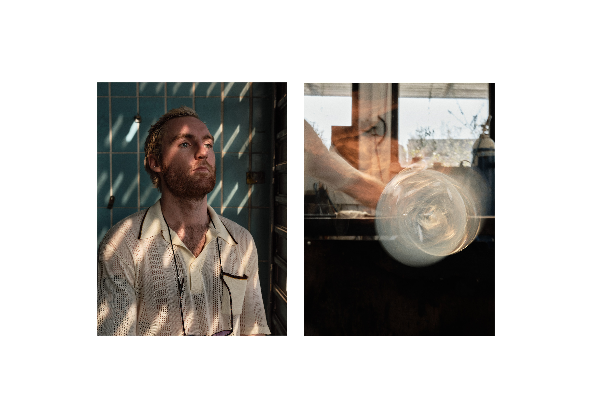

Selected Work
Recent Projects
Event coverage, brand campaigns, product photography, and digitech services for leading drinks brands and production companies.




Seven years behind the lens. Seventeen years inside the industry. Based in Majorca & Barcelona, available worldwide.
Years Photography
Years Drinks Industry
Projects Delivered
Home Bases
Event coverage, brand campaigns, product photography, and digitech services for leading drinks brands and production companies.

From concept to final delivery. I bring a rare combination of technical expertise and deep industry knowledge.
Brand films, event coverage, social content, behind-the-scenes, and promotional reels. Full production from shooting to colour-graded final delivery.
Product photography, lifestyle shoots, event documentation, and editorial work. Specialising in drinks, food, and hospitality brands.
On-set digital imaging technician. Real-time capture management, tethered shooting, colour pipeline, data wrangling, and backup for high-end production shoots.
Multi-camera live streaming for events, conferences, product launches, and brand experiences. Professional broadcast-quality output.
James brings a level of industry understanding that most videographers simply don't have. He doesn't just capture the moment — he knows which moments matter for the brand.
Professional, reliable, and brilliant under pressure. His digitech work on our shoot was flawless — not a single frame lost. We'll be booking him again.
Having someone who understands both the production side and the drinks industry is incredibly rare. James delivered exactly what we needed, on time and on budget.
Whether you're a production company needing a digitech or a brand looking for visual content, I'd love to hear from you.
Get In Touch